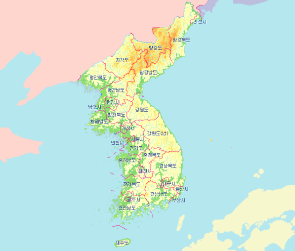
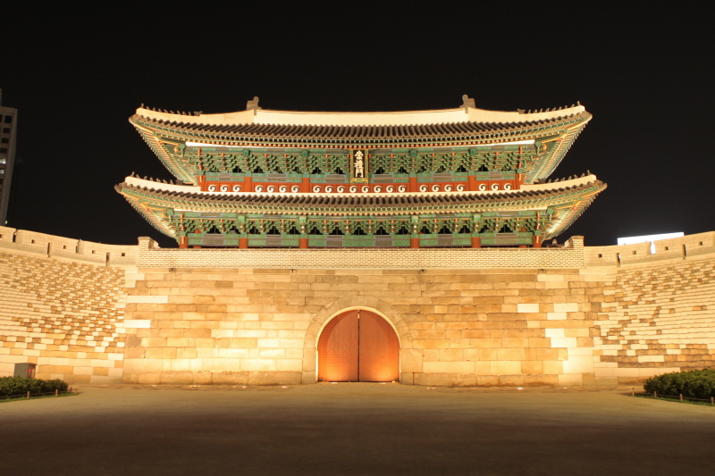

대한민국
Republic of Korea
국기
태극기
국가
애국가
언어
한국어

면적
1,003만 3,948.62㏊ 세계107위 (2016 국토교통부, FAO 기준)
인구
5,170만 9,098명 세계28위 (2019 통계청, UN, 대만통계청 기준)
GDP
1조 7,208억 9천만 달러 세계10위 (2018 한국은행, The World Bank, 대만통계청 기준)


| 계절 | 일평균 기온 | 일 최고 기온 | 일평균 기온 |
| 봄 | 5c 이상 | 0c 이상 | |
| 여름 | 20c 이상 | 25c 이상 | |
| 가을 | 20c 이하 | 25c 이하 | |
| 겨울 | 5c 이하 | 0c 이하 |
기후
한국은 유라시아대륙의 동단에 돌출한 반도로, 북위 33∼43°에 걸쳐 남북으로 뻗어 있으며, 반도를 따라 척량부를
이루는 태백산맥이 위치하고 있어 국토가 작은 데 비해 동서남북의 기후가 다양하다. 또 중위도의 온대에 위치하여
지역적인 다양성과 함께 계절적 변화에도 다채로운 추이를 볼 수 있다. 기후의 특색은 기온의 측면에서는 대륙성기후로
규정할 수 있고 강수나 바람의 측면에서는 몬순기후로 규정할 수 있다. 춥고 건조한 대륙성 기단인 시베리아 기단에
영향을 받는 겨울철에는 비가 적고 매우 건조하다. 이에 반해 여름철은 6월 말부터 장마전선의 영향으로 집중호우가
내려 많은 피해가 일어나기도 한다. 이러한 장마 시기가 지난 7~8월에는 북태평양 기단의 영향으로 고온다습한 기후를 보인다.
뚜렷한 성격의 겨울과 여름에 비해 봄과 가을은 짧지만 맑고 쾌청한 날씨가 연속되어 나타난다.

역사
한국사에서 시대구분은 예로부터 큰 관심을 끌어왔다. 신라의 역사를 상대·중대·하대, 또는 상고·중고·하고로 구분한 것은 이미
삼국사기와 삼국유사에서 찾아볼 수 있다. 그러나 대체로 왕조 중심의 구분법이 줄곧 관용화되어왔고, 20세기 초에 이르기까지도
변함이 없었다. 그러다가 서양의 근대적 역사 연구방법을 받아들이면서부터 시대구분에 여러 가지 새로운 시도가 행해지기 시작하였다.
시대구분은 바로 역사를 이해하는 척도이자, 역사관의 반영이다. 지금까지 제시된 시대구분을 공통성을 기준으로 하여 보면 몇 개의 유형으로 나뉜다.
첫째는 시간의 원근에 의한 시대구분인데, 최남선·이병도·진단학회에서 밝힌 견해이다. 이들 모두는 현재를 기점으로 하여
시간의 원근을 기준으로 삼아 시대를 구분한 것이다. 여기에는 서양사에서 흔히 사용되고 있는 고대·중세·근대의 3분법이 영향을 미치고 있다.
둘째는 사회 발전의 단계를 기준으로 시대를 구분한다. 이는 백남운·이청원·손진태, 그리고 한우근·김철준 공저에서 제시된 시대구분이다.
이들은 대체로 원시사회·고대사회·봉건사회·근대사회라고 하는 사회 발전의 단계를 염두에 두고 있다. 다만 손진태의 조선민족사개론에서는
국가의 발전이란 측면에서 독자적 견해를 보여주고 있다.
셋째는 민족의 성장과정을 기준으로 한 구분법으로서 손진태·이인영의 주장이 이에 속한다. 그러나 이 구분법은 실제 내용 서술에서는 적용되지 않았다.
넷째는 이인영·이기백의 ‘개설서’에 제시된 시대구분으로서, 주제 중심 또는 지배세력의 변화에 초점을 맞추어서 역사를 본 것이다.
그러나 이 경우에는 시대구분의 의미가 적다.
끝으로 최근에 시도되고 있는 방법은 사회 발전의 측면을 강조하면서 역사의 이해를 구조적으로 접근하려 하고 있다. 여러 학자들의 견해가 대체로 집약된,
한국사연구회의 한국사연구입문과 교육부에서 만든 고등학교 교과서에 제시된 시대구분이 여기에 해당된다. 이 경우에는 서양의 3분법과도 맥이 통한다.